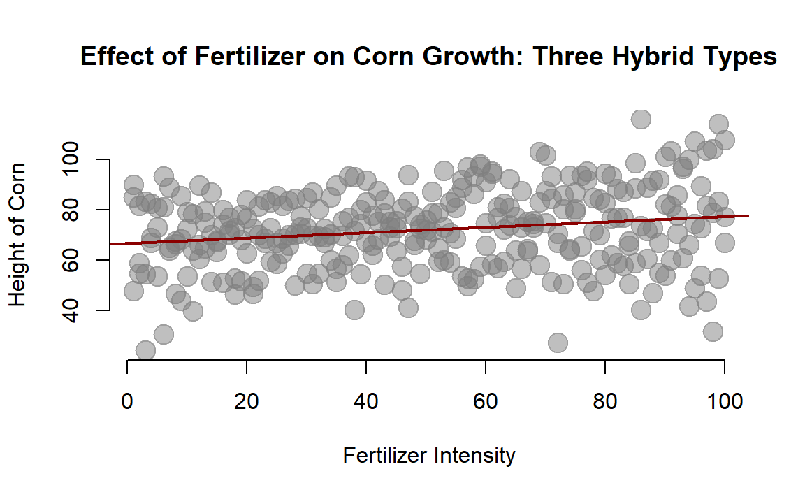
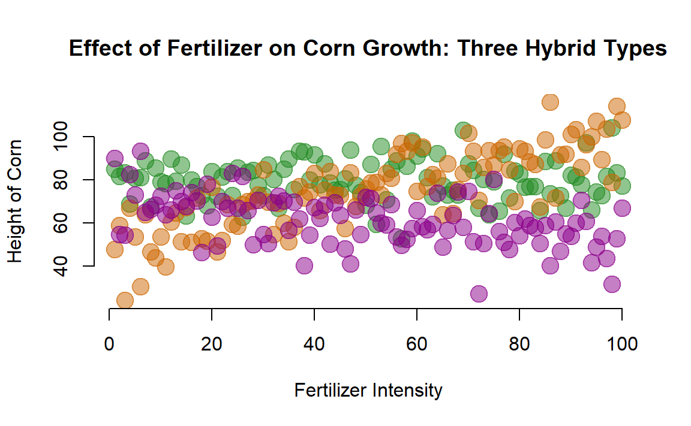
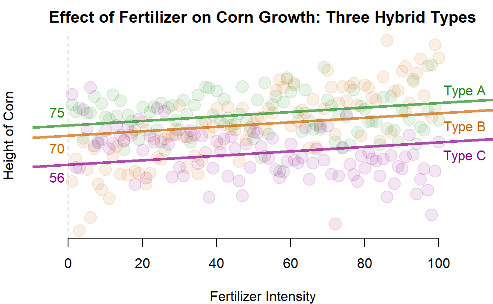
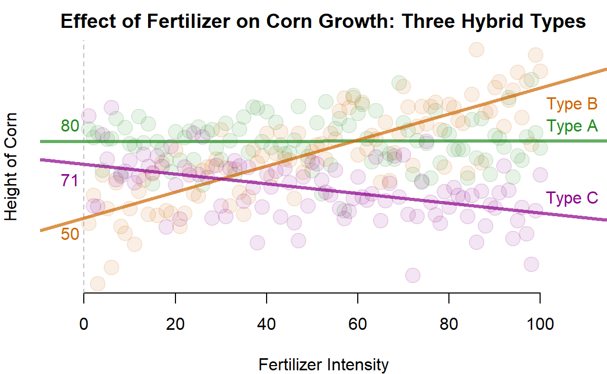

Chapter 19 Interactions with Slopes
The difference-in-difference model can be extended to circumstances where we have multiple treatments, but instead of moving from only two scenarios of no treatment (time=1) to treatment (time=2), we move from low levels of treatment to high levels of treatment. In other words, our treatment represents a continuous variable, not a binary one, and we are back in the world of regression slopes.
We can adapt our difference-in-difference framework to accomodate these types of interaction models as well. Let’s consider an example where we have developed three types of hybrid corns and we are trying to understand how these new varieties will respond to our fertilizer.
| height | fertilizer | type | dumA | dumB | dumC |
|---|---|---|---|---|---|
| 84.88238 | 1 | A | 1 | 0 | 0 |
| 81.58291 | 2 | A | 1 | 0 | 0 |
| 83.43583 | 3 | A | 1 | 0 | 0 |
| 68.82138 | 4 | A | 1 | 0 | 0 |
| 80.85738 | 5 | A | 1 | 0 | 0 |
| 81.04858 | 6 | A | 1 | 0 | 0 |
19.1 One Slope - One Intercept Model
Let’s start with a basic model and build up to a more complicated model. We can first test whether the fertilizer has any impact on corn growth, ignoring the different types of hybrids for now:
plot( fertilizer, height, col=gray(0.5,0.5), bty="n", cex=2, pch=19,
xlab="Fertilizer Intensity", ylab="Height of Corn",
main="Effect of Fertilizer on Corn Growth: Three Hybrid Types")
abline( lm( height ~ fertilizer ), col="darkred", lwd=2 )
We can see that we have a positive slope, which is statistically significant. So our fertilize does seem to have a positive effect on the corn.
| Dependent variable: | |
| height | |
| fertilizer | 0.11*** |
| (0.03) | |
| Constant | 66.77*** |
| (1.80) | |
| Observations | 300 |
| R2 | 0.04 |
| Adjusted R2 | 0.04 |
| F Statistic | 11.97*** (df = 1; 298) |
| Note: | p<0.1; p<0.05; p<0.01 |
19.2 Three Types of Hybrids
Let’s now consider the strength of each type of hybrid.
palette( c( adjustcolor( "forestgreen", alpha.f=0.5),
adjustcolor( "darkorange3", alpha.f=0.5),
adjustcolor( "darkmagenta", alpha.f=0.5) ) )
plot( fertilizer, height, col=factor(type), pch=19, bty="n", cex=2,
xlab="Fertilizer Intensity", ylab="Height of Corn",
main="Effect of Fertilizer on Corn Growth: Three Hybrid Types")
19.3 One Slope - Three Intercepts
Let’s extend our original model slightly by still examinig the impact of fertilizer on corn height, but let’s allow each variety to have its own intercept term. We can do this by adding a dummy variable for each hybrid type.

stargazer( m.01, m.02, m.03, m.04, type="html",
digits=2,
omit.stat=c("f","adj.rsq","ser"),
intercept.bottom = FALSE ) | Dependent variable: | ||||
| height | ||||
| (1) | (2) | (3) | (4) | |
| Constant | 55.72*** | 74.51*** | 70.09*** | |
| (1.89) | (1.89) | (1.89) | ||
| fertilizer | 0.11*** | 0.11*** | 0.11*** | 0.11*** |
| (0.03) | (0.03) | (0.03) | (0.03) | |
| dumA | 18.79*** | 4.42** | 74.51*** | |
| (1.88) | (1.88) | (1.89) | ||
| dumB | 14.37*** | -4.42** | 70.09*** | |
| (1.88) | (1.88) | (1.89) | ||
| dumC | -18.79*** | -14.37*** | 55.72*** | |
| (1.88) | (1.88) | (1.89) | ||
| Observations | 300 | 300 | 300 | 300 |
| R2 | 0.30 | 0.30 | 0.30 | 0.97 |
| Note: | p<0.1; p<0.05; p<0.01 | |||
The main thing to note is that this model is more flexible as it does not assume that each type will grow to the same height in the absence of fertilizer (the intercept is where X crosses zero, or where no fertilizer is provided in this case).
We again omit one case. Each dummy variable represents the height that a particular variety will achieve above and beyond the omitted group. If we change the group that we omit it will change the global and group-specific intercept terms in the model, but if you do the math in each case it should result in the same intercept for each group no matter which category is omitted. Rather, it just changes the reference point.
Note, though, that this model one contains one slope. This forces the regression to assume that all varieties of hybrid will respond the same to the fertilizer. This might not be a good assumption, so we can relax this below.
19.4 Three Slopes - Three Intercepts
If we want to make our model a little more flexible we can add interaction terms. In the previous cases we interacted the post-treatment period with the treatment category to identify program impacts. In this case we can interact the level of treatment with the corn type in order to determine the unique reponse of each hybrid to the fertilizer.

stargazer( m.04, m.05, m.06, m.07, type="html",
digits=2,
omit.stat=c("f","adj.rsq","ser"),
intercept.bottom = FALSE ) | Dependent variable: | ||||
| height | ||||
| (1) | (2) | (3) | (4) | |
| Constant | 70.80*** | 79.78*** | 49.74*** | |
| (2.05) | (2.05) | (2.05) | ||
| fertilizer | 0.11*** | -0.19*** | 0.003 | 0.51*** |
| (0.03) | (0.04) | (0.04) | (0.04) | |
| dumA | 74.51*** | 8.98*** | 30.03*** | |
| (1.89) | (2.90) | (2.90) | ||
| dumB | 70.09*** | -21.05*** | -30.03*** | |
| (1.89) | (2.90) | (2.90) | ||
| dumC | 55.72*** | -8.98*** | 21.05*** | |
| (1.89) | (2.90) | (2.90) | ||
| fertilizer:dumA | 0.19*** | -0.51*** | ||
| (0.05) | (0.05) | |||
| fertilizer:dumB | 0.70*** | 0.51*** | ||
| (0.05) | (0.05) | |||
| fertilizer:dumC | -0.19*** | -0.70*** | ||
| (0.05) | (0.05) | |||
| Observations | 300 | 300 | 300 | 300 |
| R2 | 0.97 | 0.59 | 0.59 | 0.59 |
| Note: | p<0.1; p<0.05; p<0.01 | |||
We now have a model that can be used to test whether each hybrid type responds to fertilizer differently.
Similar to the difference-in-difference models, in order to calculate the slope for each group we need to add the group-specific slope component to the main slope, which is associated with the omitted category.
Again, not that if you change the reference category you will change the specific model coefficients. But no matter which category is omitted the models should produce the same group slopes.
You need to take care to interpret statistical significance in reference to the omitted category. For example, corn Type A does not seem responsive to this particular fertilizer (the slope is 0). Type C has a negative response. If we omit Type C from the regression model then the global slope will represent the response of the omitted category, and the coefficient for the fertilizer Type A interaction will tell us whether the slope differs from the reference group. Since A does differ from C both are signiifcant. But if we omit Type A, now the reference slope is approximately 0, which will not be statistically significant.
This shows us that the statistical significance of the interaction terms relate to how they difference from the reference group, not whether they differ from zero.